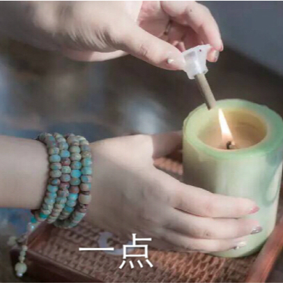

我有个朋友接触艾灸已经十年有余，在艾灸方面那是相当的专业，下面是他在艾灸方面的一些个人心得，一起来看看吧！

一
我有口唇干裂的毛病，有一阵严重了，试用艾条灸了以下穴位：三阴交、太溪，每天一次，每穴15分钟。共灸了2次，口唇不再开裂褪皮。
结论：三阴交、太溪补全身之元阴，水旺则锅不开，所以经云：壮水之主，以治阳光。
很多女性艾友，艾灸之前月经正常，艾灸后月经量反而减少了，那么同样灸灸三阴交、太溪穴也就正常了。
二
我一直体弱，长年感冒不断，病也不重，症也不断，很烦。前几天突然加重，随用艾条灸之，方法如下：曲池、手三里、合谷、外关、灸了2次感觉不错，特此介绍给大家。
曲池者，强壮穴也，又有清热之效(本人阴虚火旺故取)，一般只在风热感冒时取之;三里是我平时灸时无意中体会到得穴位，其作用如同足三里，我每次灸此穴时热感可电传至三间、合谷!实际上唐代名医孙思邈提出：“若要安，三里常不干”的“三里”大多数人以为单指足三里，实际上还包括手三里。外关调三焦，合谷理头面，道理不再赘述。我深爱灸法，因其好操作，更因其无所不治，还兼有拔山之力。
三
灸法中效力最强者化脓灸，隔物灸次之，艾条灸又次，用某些随身灸盒则效微矣。化脓灸，起陈荷、决生死;发泡灸即非瘢痕灸，去大病，再延寿;艾条灸，寻常病，随手治。化脓灸，用3年以上的陈艾绒，直接放在要灸的穴位上，待其燃尽更换一柱再灸，灸后在1个月内所灸处化脓(无菌性化脓)，等脓干、痂掉，则病除。此谓之化脓灸，古时每壮艾绒大的底是阔1厘米左右的圆锥体，小的艾柱俱称为半粒米大。不用拔罐贴药的，量足了它自己出脓，实在不出，吃点发物发之足矣。
四
喜欢灸法的艾友们可看看周眉生老先生的《灸绳》。
五
风寒感冒，速灸双合谷各30分钟，即效，多次的体会。说的办法是效速，我各灸了10分钟，就好了大半。搜索关注公众号学艾灸，凡是家有老人、孩子的我真心劝你们学学灸法，钱不钱的另说，副作用为零，效果又神速，老人孩子少受苦啊!!!
六
大椎，为强壮穴，主一身之热。凡属热病皆治，比如退烧，有点刺出血加罐的，有针刺的，有刮痧的，不一而足。我曾在某网站见一帖，用灸盒灸大椎，手持艾条灸天突，共记半小时，咽疼大减，咳嗽顿止。所以我也用大椎防治小儿感冒郁而化火。如：这几年我儿子有感冒症状了，我用艾条灸以下穴位：大椎、风门、肺俞、身柱，一般每次每穴3分或5分钟，总共10来分钟，一般1次到2次就好了。
冬至白天老妈吃了些姜片，晚上回家后兴起给老妈灸了一柱，约30分钟半小时后，老妈说感觉四肢都有凉风外走，效果不错。立春当日，也小试一下，效果同上。我曾经让母亲连续灸了几天的涌泉，母亲说，灸时感觉到热流从后背上头了，呵呵，可惜母亲未能坚持下来。
灸者，久也，从火从久之意，功到自然成啊。
七
下面谈谈我化脓灸关元后的体会。
因本人以前是阴虚体质，又疏于调理，渐至腰疼，3年前得复发性口疮，所以暗思应为肾虚腰疼。随吃了几十副中药，仅仅显效而已，心中烦闷不已，又想经云：若要安，丹田三里不要干。随用米粒大的小艾绒在关元灸，大概7壮也就10分钟就结束了。起身一走，呵呵，腰不疼了。想第一次用艾条灸治口疮，只在涌泉灸了大概20分钟光景，第二天花生米大的口疮小了一半。心中大为感慨，这才是应了祖宗的话：火有拔山之力啊!
八
这2天我用黄豆大的艾绒，每天灸30壮。第一天灸了20壮，灸完神清气爽，浑身是劲儿。呵呵，怪道肾为先天啊，这是人的能量库啊!!
我不同意某些人说：灸关元是透支先天之说。试想《扁鹊心书》中述，一匪90而人道不衰，难道他的先天就无穷尽?!最近(忘了在哪)看到有帖子说：关元沟通先天和后天。。。。。。
九
需要把三百多个穴位都记住吗?不需要!
中医在按摩经络时有个说法叫「以痛为俞」，也就是说疼痛的部位就是按摩的穴位。比如你知道自己患有心脏方面的疾病，就可以在相应的心经和心包经上沿著经络慢慢地按压，去感受整条经络上各处的感觉。如有的地方酸痛，有的地力刺痛，有的地方麻木，有的地方发酸、发胀，那么这时你按摩的重点就放在最痛的部位，把病灶揉开、揉散，甚至拔罐、艾灸、敲打都可以，越是痛感明显的，越要坚持多刺激此处，这样你身体的疾病很快就有好转。
有些人明明知道自己心脏有病，可在这两条经上按压时并没有明显的痛感，这时，你左右两只手臂上都要去摸，因为人体经络左右都是对称和一致的，但患病时左右经络的反应并不完全一样，痛感明显的就代表著病偏向于哪一边，这也说明了你这条经络的气血不足，反应迟缓，这时的冶疗以食疗为主先，补足气血，同时在这条经络上慢慢摸，看上面是否有硬块，是否多出了一块肉，是否比别处微微凸起，然后重点搓揉这个部位就行了。如果只是死记硬背了所有穴位，但忽视了最痛的那一点，治病效果绝不会好。
原文出处：http://aiyijiu.github.io/article/236.html 更多艾灸资讯尽在艾易灸艾灸网！